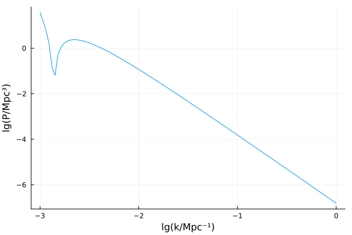

Getting started
Install SymBoltz.jl and load it with
using SymBoltz1. Create the model
The first step is to define our cosmological model. This is a symbolic representation of the variables and equations that describe the various components in the universe, such as the theory of gravity (like general relativity) and particle species (like the cosmological constant, cold dark matter, photons and baryons). It will be used both to create the numerical problem to solve, and to access variables in its solution.
To get started, we will simply load the standard ΛCDM model:
M = ΛCDM()ΛCDM
├─ g
├─ G
├─ γ
├─ ν
├─ c
├─ b
│ └─ rec
├─ h
└─ ΛAs shown, the symbolic model is structured with a hierarchy of components, each of which contains chunks of the Einstein-Boltzmann system (it can also be displayed graphically with using Plots; plot(M)). In this case, the components are the spacetime metric (g, for $g_{\mu\nu}$), the theory of gravity (G, here general relativity), photons (γ), massless neutrinos (ν), cold dark matter (c), baryons (b), massive neutrinos (h), dark energy as a cosmological constant (Λ) and recombination (rec). Internally, these components are combined into a full Einstein-Boltzmann system. The full system is also separated into sequential computational stages, like the background and perturbation systems.
The hierarchical structure can be inspected interactively (with TAB-completion) as a ModelingToolkit system by evaluating M, M.G, M.g.ρ and so on. For example, to see all equations for the theory of gravity:
equations(M.G)\[ \begin{align} \frac{\mathrm{d}}{\mathrm{d}t} \frac{\mathrm{d} a\left( t \right)}{\mathrm{d}t} &= - \frac{4}{3} \left( \rho\left( t \right) + 3 P\left( t \right) \right) a\left( t \right) \pi \\ \frac{\mathrm{d} \Phi\left( t \right)}{\mathrm{d}t} \epsilon &= \left( \frac{ - k^{2} \Phi\left( t \right)}{3 \mathscr{E}\left( t \right)} + \frac{ - \frac{4}{3} \left( a\left( t \right) \right)^{2} \delta\rho\left( t \right) \pi}{\mathscr{E}\left( t \right)} - \mathscr{E}\left( t \right) \Psi\left( t \right) \right) \epsilon \\ k^{2} \left( - \Psi\left( t \right) + \Phi\left( t \right) \right) \epsilon &= 12 \left( a\left( t \right) \right)^{2} \Pi\left( t \right) \pi \epsilon \end{align} \]
2. Solve the model
Next, we set our desired cosmological parameters and wavenumbers, and solve the model:
using Unitful, UnitfulAstro # for interfacing without internal code units
pars = [
M.γ.T0 => 2.7
M.c.Ω0 => 0.27
M.b.Ω0 => 0.05
M.ν.Neff => 3.0
M.g.h => 0.7
M.b.rec.Yp => 0.25
]
ks = 10 .^ range(-3, 0, length=100) / u"Mpc"
sol = solve(M, pars, ks)Cosmology solution with stages
1. background: solved with Rodas5P, 433 points
2. thermodynamics: solved with Rodas5P, 41618 points
3. perturbations: solved with Rodas5P, 550-4561 points, x100 k ∈ [4.282749400000001, 4282.749400000001] H₀/c (linear interpolation in-between)To solve only the background, you can simply omit the ks argument: solve(prob, pars).
3. Access the solution
You are now free to do whatever you want with the solution object. It can be called like
sol(t, y)to get the variable(s) $y(t)$ as a function of conformal time(s) $t$, orsol(k, t, y)to get the variable(s) $y(k,t)$ as a function of the wavenumber(s) $k$ and conformal time(s) $t$.
y can be any symbolic variable(s) in the model M. The solution will automatically interpolate linearly in $\log(k)$, and with the ODE solver's custom interpolator in $t$.
For example, to get the reduced Hubble function $E(t) = H(t) / H_0$ for 300 log-spaced conformal times:
ts = exp.(range(log.(extrema(sol[M.t]))..., length=300))
Es = sol(ts, M.g.E)300-element Vector{Float64}:
8.409087052716182e18
6.461996289970458e18
5.063904986748251e18
4.0301989433567e18
3.247848158124242e18
2.6443761761589146e18
2.1715181731847665e18
1.7961034801457285e18
1.494719469777645e18
1.2504599361616036e18
⋮
2.945322018975583
2.556726581416087
2.2231198168354083
1.9365335719086292
1.6900940784857652
1.4778652703926156
1.2947159282198948
1.1362081145127356
0.9985047947660599Similarly, to get $\Phi(k,t)$ for the 100 wavenumbers we solved for and the same 300 log-spaced conformal times:
Φs = sol(ks, ts, M.g.Φ)100×300 Matrix{Float64}:
0.564706 0.51724 0.476865 0.441915 … 0.0821639 0.07975 0.0768881
0.564706 0.51724 0.476865 0.441915 0.0741945 0.0716897 0.0689001
0.564706 0.51724 0.476865 0.441915 0.066643 0.0641627 0.0615285
0.564706 0.51724 0.476865 0.441915 0.0595677 0.0572 0.0547739
0.564706 0.51724 0.476865 0.441915 0.053055 0.0508595 0.0486679
0.564706 0.51724 0.476865 0.441915 … 0.047084 0.0450912 0.0431373
0.564706 0.51724 0.476865 0.441915 0.0416974 0.0399171 0.0381907
0.564706 0.51724 0.476865 0.441915 0.03686 0.0352856 0.0337681
0.564706 0.51724 0.476865 0.441915 0.0325454 0.0311619 0.0298321
0.564706 0.51724 0.476865 0.441915 0.0286911 0.0274788 0.0263147
⋮ ⋱
0.564706 0.51724 0.476865 0.441915 3.72431e-7 3.58638e-7 3.45288e-7
0.564706 0.51724 0.476865 0.441915 3.23831e-7 3.11841e-7 3.00238e-7
0.564706 0.51724 0.476865 0.441915 2.81465e-7 2.7104e-7 2.60951e-7
0.564706 0.51724 0.476865 0.441915 2.44673e-7 2.35612e-7 2.26842e-7
0.564706 0.51724 0.476865 0.441915 … 2.12569e-7 2.04688e-7 1.97062e-7
0.564706 0.51724 0.476865 0.441915 1.84746e-7 1.77897e-7 1.71269e-7
0.564706 0.51724 0.476865 0.441915 1.60479e-7 1.54524e-7 1.48762e-7
0.564706 0.51724 0.476865 0.441915 1.39416e-7 1.3424e-7 1.29232e-7
0.564706 0.51724 0.476865 0.441915 1.21112e-7 1.16614e-7 1.12263e-7This can be plotted with using Plots; plot(log10.(ts), transpose(Φs)), but this is even easier with the included plot recipe:
using Plots
plot(sol, [1e-3, 1e-2, 1e-1, 1e-0] / u"Mpc", log10(M.g.a), M.g.Φ) # lg(a) vs. Φ for 4 wavenumbers
We can also calculate the power spectrum for a desired species (here: cold dark matter with M.c):
Ps = power_spectrum(sol, M.c, ks)
plot(log10.(ks/u"1/Mpc"), log10.(Ps/u"Mpc^3"); xlabel = "lg(k/Mpc⁻¹)", ylabel = "lg(P/Mpc³)", label = nothing)